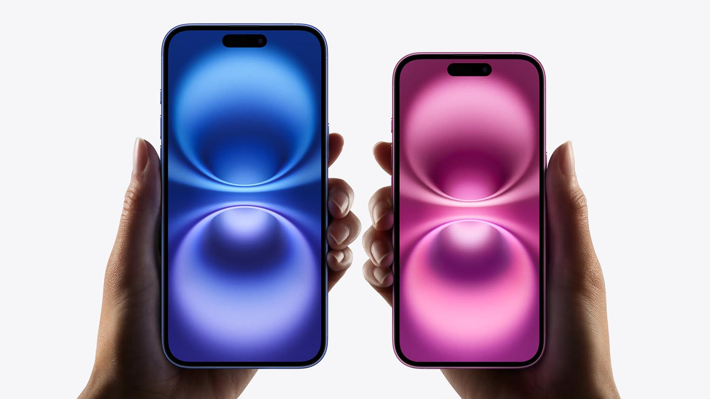
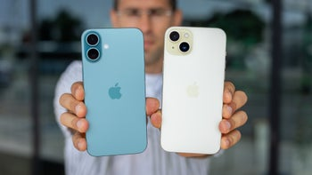

Introduction complète au comparatif :
Le lancement de l’iPhone 16 a suscité beaucoup d’intérêt parmi les utilisateurs, notamment en raison des avancées technologiques qu’il propose par rapport à l’iPhone 15. Bien qu’ils semblent similaires à première vue, ces deux modèles présentent des différences significatives dans plusieurs domaines : performance, autonomie, design et bien d’autres. Dans ce comparatif, nous allons explorer chaque aspect en détail pour vous aider à faire un choix éclairé.
De l’amélioration de l’autonomie de la batterie à l’introduction de nouvelles fonctionnalités de caméra, nous allons tout couvrir. Découvrez comment l’iPhone 16 surpasse son prédécesseur dans les domaines de l'innovation et de la performance.
Les dernières nouveautés :
Le modèle iPhone 16 introduit plusieurs nouvelles fonctionnalités qui permettent une expérience utilisateur plus fluide et plus immersive. Parmi les points forts, on note l’intégration d’un nouveau processeur ultra-rapide, la puce A18, qui offre une vitesse accrue par rapport à l’A16 de l’iPhone 15.
La caméra arrière a également été améliorée avec l’ajout d’un capteur de plus grande taille pour des photos de qualité supérieure. D'autres innovations incluent un meilleur système de refroidissement et une autonomie de batterie plus longue, grâce à une batterie de plus grande capacité et à une meilleure gestion de l’énergie.
Comparaison rapide :
| Caractéristiques | iPhone 16 | iPhone 15 |
|---|---|---|
| Processeur | A18 (3 nm) | A16 (4 nm) |
| Autonomie | 22 heures | 20 heures |
| Capacité de la batterie | 4000 mAh | 3500 mAh |
| Caméra principale | 48 MP avec mode nuit avancé | 12 MP |